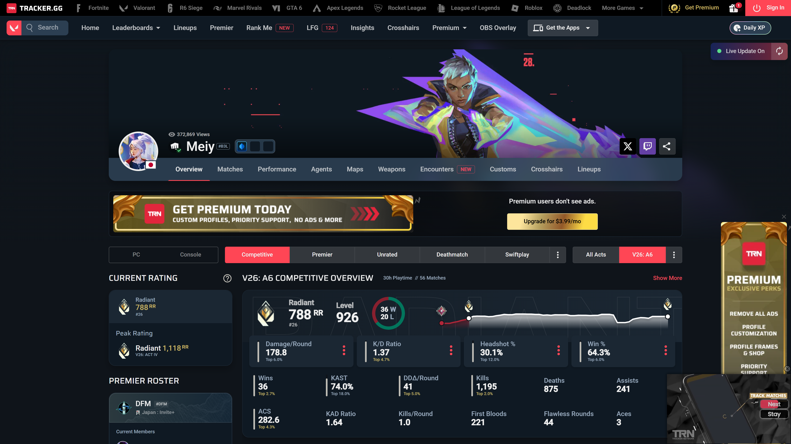
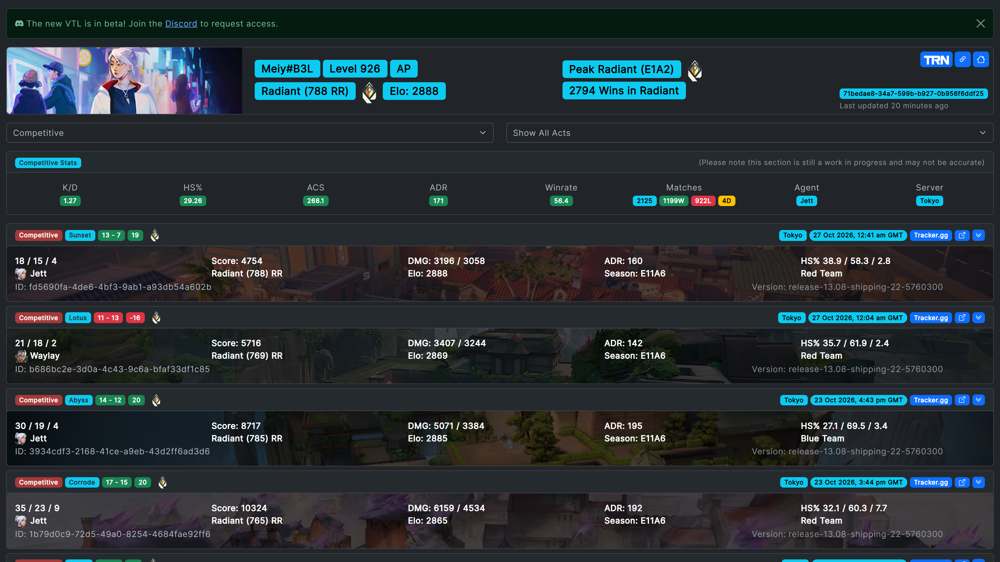
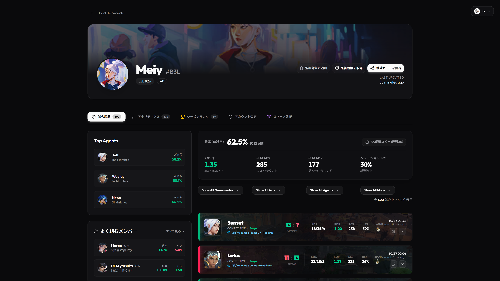
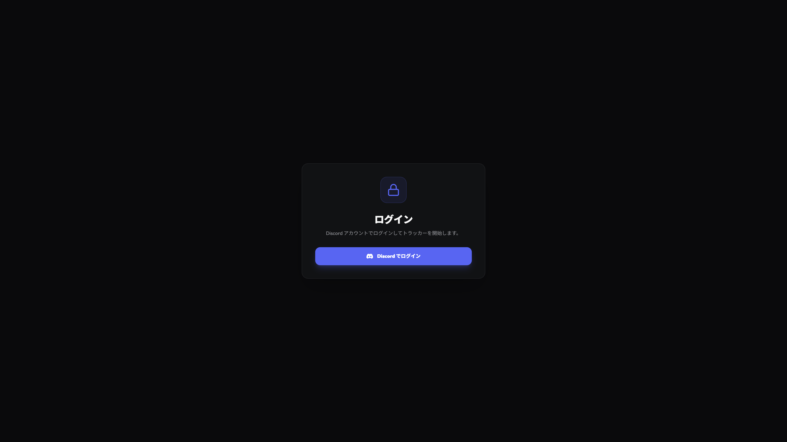
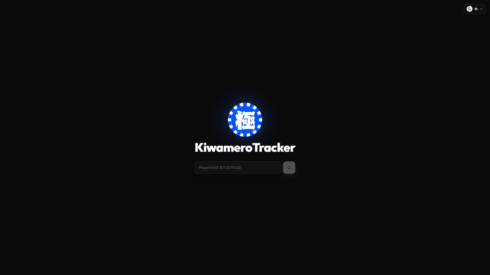
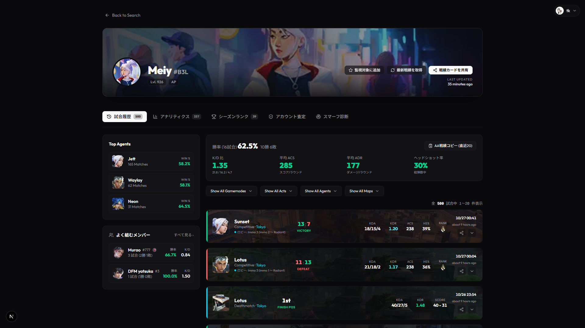
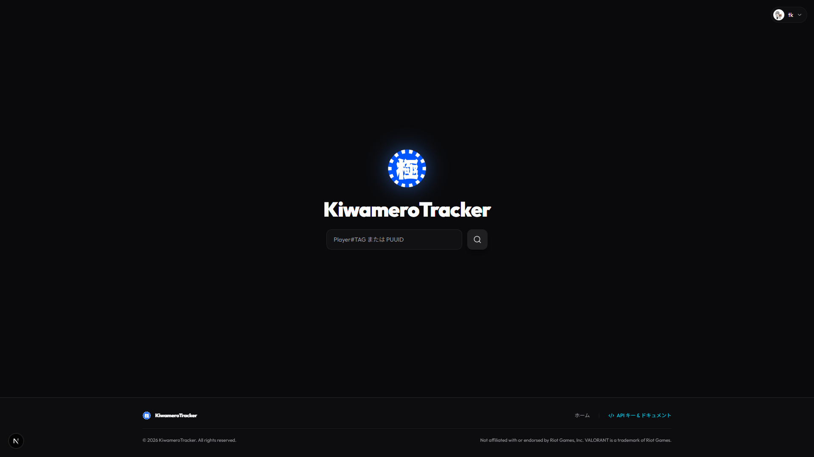

2026-10-27 · 対象: tracker.gg / vtl.lol / tracker.valosmurf.net · 手法: Scrapling StealthyFetcher (Camoufox)
角丸 6px / pill badge 併用
| 機能 | tracker.gg | vtl.lol | KiwameroTracker |
|---|---|---|---|
| プロフィールヘッダ | エージェントスプラッシュ背景 + 丸アバター + 閲覧数 + SNS共有 | バナー + バッジ群 (Lvl/地域/ランク/Elo) | プレイヤーカードwideart + 丸アバター + Lvl/リージョン + 3アクション |
| タブ | Overview/Matches/Performance/Agents/Maps/Weapons/Encounters/Customs/Crosshairs/Lineups | — | 試合履歴/アナリティクス/シーズンランク/アカウント査定/スマーフ診断 |
| スタッツ表示 | 大数字+ドーナツ+RRスパークライン+Top X% パーセンタイル | チップ行 (K/D, HS%, ACS, ADR, Winrate, Matches W/L/D, Agent, Server) | 勝率大数字 + K/D・ACS・ADR・HS率グリッド |
| 試合カード | 一覧テーブル型 | マップ画像背景 + +19/-16 RRバッジ + 展開詳細 | マップ画像背景 + 左勝敗バー + KDA/KDR/ACS/HS%/ランク + 展開 |
| フィルタ | PC/Console・playlist・Act のセグメント | playlist/act セレクト | Gamemodes/Acts/Agents/Maps ドロップダウン |
| 独自機能 | Leaderboards, LFG, Insights, Crosshairs, OBS Overlay, Premium | PUUID click-copy, Tracker.ggリンク, Elo | 監視対象・戦績カード共有・AA戦績コピー・査定・スマーフ診断・開発者API |
| 認証 | なし(公開) | なし(公開) | Discord OAuth必須 |

ヒーロー + タブ + プレイリストフィルタ + レーティング/スタッツパネル

チップ行スタッツ + RR±バッジ付きマッチカード

ヒーロー + 5タブ + Top Agents/メンバー + スタッツ + マッチカード


| ページ | 内容 | 状態 |
|---|---|---|
/login | Discord OAuthカード (南京錠+blurpleボタン) | 再現済 |
/ | ロゴ + Player#TAG/PUUID 検索 | 再現済 |
/tracker/[name]/[tag] | ヒーロー/5タブ/Top Agents/よく組むメンバー/スタッツ/フィルタ/マッチカード(展開式ロスター)/ページネーション | 再現済 |
/developers | APIキー発行/プレイグラウンド/ドキュメント タブ | 再現済 |

本番データ (Meiy#B3L 20試合/39シーズン/査定ログ) をシード

| 種別 | 内容 | 保存先 |
|---|---|---|
| HTML | 3サイト + 認証後3ページ (レンダリング済DOM) | docs/research/*.html |
| CSS | tracker.gg 56枚 / vtl 7枚 / valosmurf 2枚 + トークンJSON | docs/research/*-css-*.css *-tokens.json |
| 構造化データ | HenrikDev形式マッチ×20・シーズン39・エージェント内訳15・査定/診断ログ | src/data/*.json |
| 画像 | エージェント29・マップ14・ロゴ (本番公開ディレクトリから) | public/{agents,maps,brand}/ |
| セッション | valosmurf永続プロファイル + storage_state | tools/scrape/.valosmurf-profile docs/research/valosmurf-state.json |